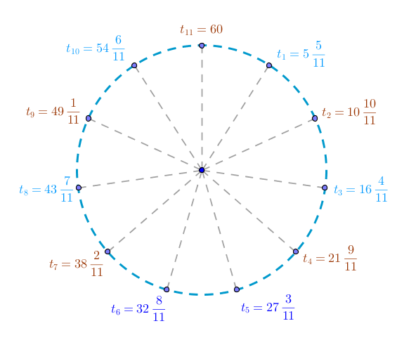

Problem
How many times will the minute hand catch up to the hour hand during one \(24\)-hour day starting from midnight?
Solution
Let \(v_h\) be the speed of the hour hand and let \(v_m\) be the speed of the minute hand. We know that constant speed, distance and time are connected with each other via the formula:
$$d = v \times t$$where \(d\) is the distance traveled and \(t\) is the time it took to travel that distance at a constant rate \(v\).
In this particular case we will use the markings on the face of the analog clock that measure minutes and seconds as our units of space.
Since the speed of the minute hand is \(v_m = 60\) units per hour and the speed of the hour hand is \(v_h = 5\) units per hour it follows that the instance the new day, and a \(24-\)hour period, begins the minute hand will be ahead of the hour hand and the "catch up" event will not occur. Further, it means that the first such event will occur some time after the clock strikes \(1\) o'clock.
At \(1\) o'clock sharp the minute hand will be pointing at the \(12\) o'clock mark while the hour hand will point at the \(1\) o'clock mark and, since we have established already that the minute hand runs faster than the hour hand, the minute hand will be poised to catch up to the hour hand at \(t_1\):
Let \(x_1\) be the distance covered by the hour hand before it is overtaken by the minute hand. Then the distance covered by the minute hand before it catches up with the hour hand is \(5 + x_1\).
When the minute hand catches up with the hour hand it would've traveled for exactly the same time \(t_m\) as the hour hand \(t_h\) and hence:
$$t_m = t_h$$ $$t_m = \frac {5 + x_1}{v_m}$$ $$t_h = \frac {x_1}{v_h}$$ $$\frac {5 + x_1}{v_m} = \frac {x_1}{s_h}$$Substituting the actual values for \(v_m\) and \(v_h\) into the above equation we obtain:
$$\frac {5 + x_1}{60} = \frac {x_1}{5}$$ $$5 + x_1 = 12 x_1$$ $$5 = 11 x_1$$ $$x_1 = \frac {5}{11}$$ $$t_1 = 5 + \frac {5}{11} = 5 \times 1 + \frac {5 \times 1}{11}$$We now see that since both hands run at a constant rate, the initial distance between them when the clock strikes \(n\) o'clock sharp will be \(5\times n\) units of space: when the clock strikes \(2\) sharp - it will be \(10 = 5 \times 2\) units, when the clock strikes \(3\) sharp - it will be \(15 = 5 \times 3\) units and so on:
$$t_n = 5n + \frac {5n}{11}$$which means that the minute-hour hands' \(11-\)th rendezvous point will be at:
$$t_{11} = 5 \times 11 + \frac {5 \times 11}{11} = 60$$which designates high noon for the first twelve hours of the day and the dead of the night for the the second \(12-\)hour period which bring the tally of the "catch up" events in question to \(11\) during the \(12\)-hour period and \(22\) during the \(24\)-hour day:
\(\blacksquare\)